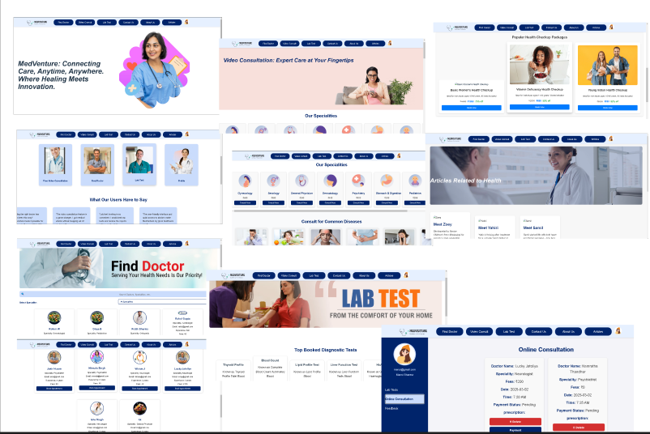
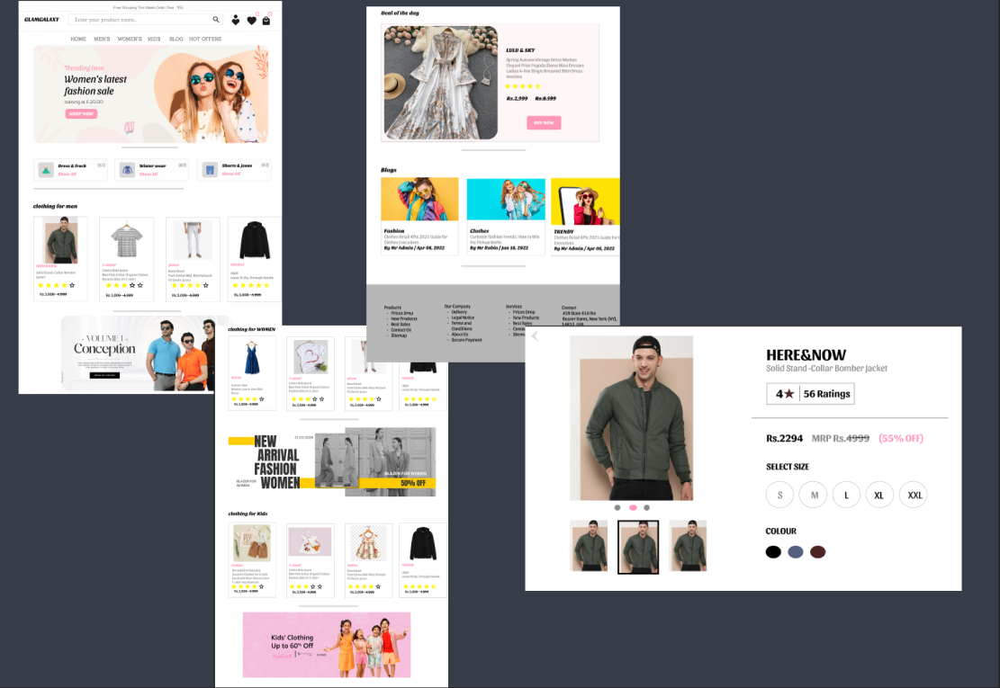
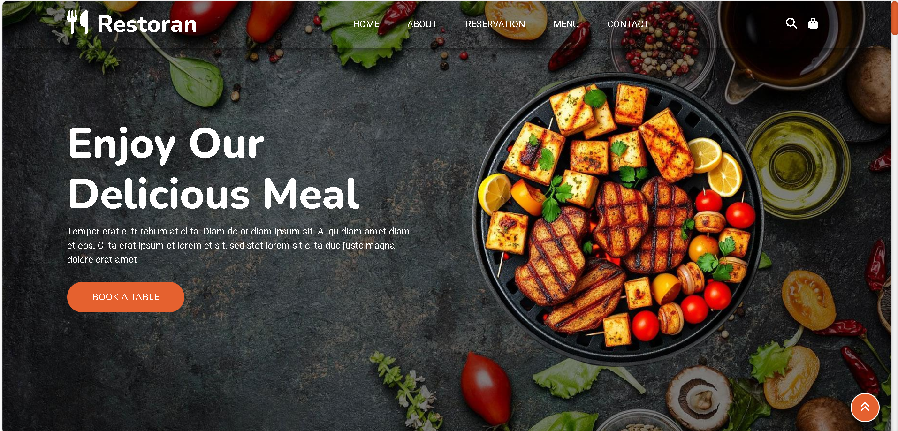

MedVenture, healthcare platform
Figma UI and MERN stack platform for doctor and patient services: doctor search, video consultations, appointment scheduling and prescription management.
Technical Product Manager with 1+ year of experience owning an enterprise platform end to end, from requirement gathering and BRDs through solution design, sprint execution and release. I built Prudential HCL's Rewards & Recognition platform from scratch, covering rule-driven workflows, payments, accounting and bank integration. I combine a technical background (SQL, API integration, full-stack development) with stakeholder management and Agile delivery, and I bring the same approach to SaaS, B2B and B2C products in fintech, e-commerce and beyond.
Open to Technical Product Manager roles in
View case studiesDownload resumeContactThree case studies from the same product, each with the documents, designs and delivery artifacts behind it. Client data and screens are omitted for confidentiality.
Turning insurer requirements into a live platform: discovery, BRDs, wireframes, Figma, sprints, SIT, UAT and production release.
Read case study →From instant and slab commission to GST, accounting entries, invoice approval, bank payment, rejection handling and statements.
Read case study →The delivery system behind the platform: sprint cycle, stakeholder roles, risk handling and the path from SIT through UAT to production.
Read case study →One enterprise product, seven capability areas.
An enterprise intranet application that calculates, approves, pays and reports commission for insurance intermediaries. Built from scratch, from requirements through production, with a team of 15–20.
Parameter, condition and slab-based calculation, plus instant commission on policy punch.
Entries generated at different stages, including GST handling.
Invoices raised from finalized commission and approved before payment.
Bank integration to pay IMDs, with rejected payments handled.
Statements generated after finalization so agents see what they earned.
Access defined per page for different users.
Workflows and business rules aligned to the compensation structure.
The work every product team expects from a PM, and how I have done it.
I turn spoken business rules into flows and wireframes the business can confirm before engineering starts.
I bring the business solution options for how a requirement can be represented in the application.
Rejected payments, exceptions and approvals are product features, so I design them up front.
Clear BRDs, sprint plans and a tight loop with developers and testers keep deliveries on time.
Hands-on work that supports my product thinking: UX design in Figma, full-stack builds, and databases.

Figma UI and MERN stack platform for doctor and patient services: doctor search, video consultations, appointment scheduling and prescription management.

Responsive clothing store design for men, women and kids with product cards, filters, offers and blogs.

Group project automating employee data management and salary calculation.
Group project covering account management, transactions and reporting using classes and inheritance.
A Technical Product Manager with 1+ year owning an enterprise platform end to end. I combine SQL, API integration and full-stack development with stakeholder management and Agile delivery to bridge business and engineering, in any SaaS, B2B or B2C product.
Training and hands-on experience that support my product, data and design work.
NIIT Foundation, 2024. Hands-on work in Python, SQL, MySQL and Power BI, including dashboards and models for analytics use cases.
TNS India Foundation, 2024. Aptitude, resume building, communication, group discussions and interview preparation.
InAmigos Foundation, Apr 27 – May 10, 2025. Visual communication, layout design and branding using Canva and Adobe Express.
How I took Prudential's requirements from conversations to a live production platform.
Prudential needed a Rewards & Recognition platform to manage how intermediaries earn and receive commission. No product existed yet. I joined at the start and worked on it from scratch.
Commission depends on many parameters and conditions, flows into accounting, and ends in a bank payment. The business could describe the rules, but not yet how they would behave inside an application.
Roles and rights control access across every page of the module.
Each business requirement was shown as a working flow and a screen before it went to development. That reduced ambiguity for the engineers and gave the business something concrete to approve.
| Decision | Rationale |
|---|---|
| Show behaviour before building | Wireframes and Figma let stakeholders validate rules early, when changes are cheap. |
| Offer solution options | The business chooses with trade-offs visible, instead of receiving one fixed answer. |
| Treat finance as core scope | Accounting entries, trial balance and bank payments were designed with commission, not added later. |
| Define access per page | Roles and rights were set for each page so users only do what their job allows. |
Every rule was written down so business, design, engineering and QA worked from the same source. This is an illustrative excerpt, rewritten without client specifics.
Objective: pay eligible commission immediately when a policy is successfully punched.
Trigger: policy status becomes successfully punched.
Rule: commission is calculated from configured parameters, conditions and slabs.
As a finance user, I want commission to be calculated and queued for payment when a policy is punched, so that intermediaries are paid without manual steps.
Given an eligible policy is successfully punched, when the commission rules run, then commission is calculated and queued for bank payment.
Given the bank rejects the payment, then the status shows rejected and the handling flow starts.
I coordinated developers, testers and business partners through sprints, keeping deliveries on schedule. SIT validated the system, UAT validated the business behaviour, and I stayed through production.
The platform is live in production and being used successfully. It covers commission calculation, finalization, invoicing, payment and statements for intermediaries.
A deep dive into the module at the core of the Rewards & Recognition platform.
The module had to calculate commission under many conditions, finalize it, raise and approve invoices, pay by bank, record accounting, and give agents a statement.
Commission should be calculated by rules and paid to intermediaries.
Which parameters apply, which conditions trigger which rule, what is paid instantly or later, what tax and entries follow, and what happens on failure.
Accounting entries generate at different points along this path rather than in one batch, so finance can trace every amount.
Screens were wireframed and designed in Figma before development so the business could validate behaviour early. Below is a recreated example of a commission run screen with sample data, not a client screenshot.
Approved commission is paid to intermediaries (IMDs) through bank integration. I designed what happens when a payment is rejected, so a failure has a defined status and next step instead of becoming a manual investigation.
Recreated from the working flow. Client data is omitted.
I defined which users can see or do what on each page of the commission module, so approvals, special actions and payments stay with the right people.
The commission module is live, handling the full path from calculation to statement. After finalization, agents receive commission statements showing what they earned.
The patterns carry over to any product that calculates, approves and pays money.
How I kept business, design, engineering and QA moving together from first sprint to production.
Developers, testers, UI/UX designers, Prudential's business partners and IT stakeholders all depended on each other. My job was to keep scope clear, issues visible and deliveries on time. Prudential's other technology partners, TATA PAS and the Ignite team, were part of the picture too.
I ran planning, backlog grooming and release tracking in Jira, handled issues raised by Prudential, and tracked development through GitHub and coordination through Microsoft Teams. BRDs and stakeholder reports lived in Word and Excel.
Illustrative RACI. R = responsible, A = accountable, C = consulted, I = informed.
| Activity | PM | Business | UI/UX | Dev | QA |
|---|---|---|---|---|---|
| Requirements and BRD | A/R | C | I | C | I |
| Wireframes and Figma | A | C | R | C | I |
| Build and APIs | A | I | C | R | C |
| SIT | A | I | I | C | R |
| UAT | A/R | R | I | C | C |
Requirements changed during the program. I handled each change request by updating the documents, flows and Figma designs so developers and testers always worked from the latest version.
TATA PAS and the Ignite team also work for Prudential. I coordinated with them on data flow, so information moved correctly across the teams involved.
| Risk | Mitigation |
|---|---|
| Ambiguous business rules | Process flows and wireframes validated with the business before build. |
| API mismatch with the bank or other systems | Endpoints validated against Swagger documentation with developers. |
| Payment rejection edge cases | A defined rejection handling flow designed up front. |
| Scope drift | BRDs, backlog grooming and regular alignment on scope and priorities. |
I led UAT, validated defects and verified each production release against business requirements before go-live.
The platform went live and is in use, delivered through sprint cycles with developers, testers and business partners aligned on scope. These practices are independent of industry.